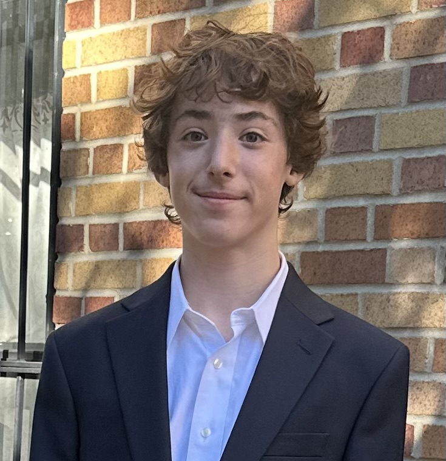
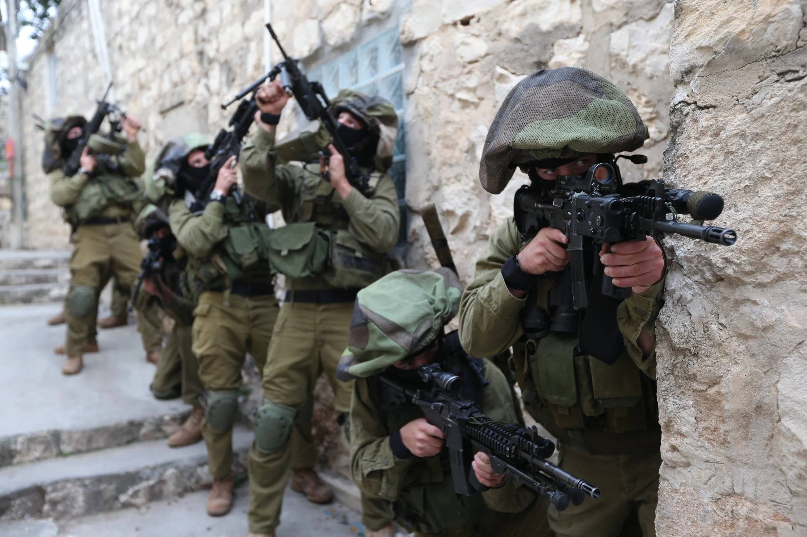
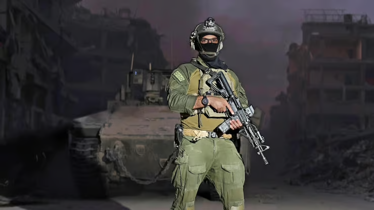
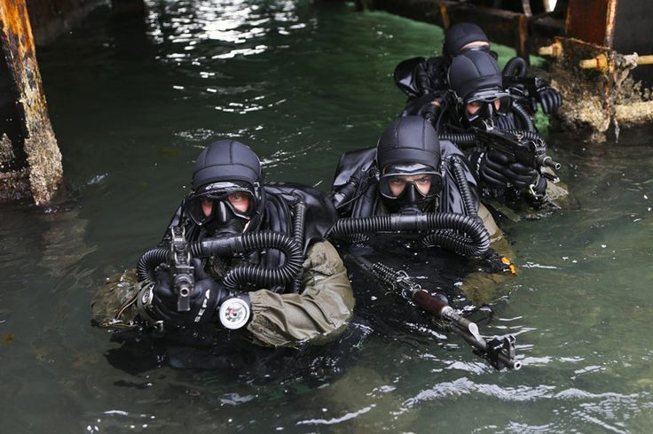

Celebrated at the Western Wall, Jerusalem
Challenge Dates: March 1 – March 31
This challenge helped me build discipline, responsibility, and perseverance — important qualities as I become a Bar Mitzvah. I will also be learning 10 Hebrew words every day to deepen my understanding of Jewish identity, Zionism, and Shayetet 13.
For my Bar Mitzvah project, I am supporting AFINS (American Friends of Israel Navy SEALs), which helps provide equipment, training support, and assistance to the brave soldiers of Shayetet 13.
Shayetet 13 is an elite naval special forces unit in the Israel Defense Forces. These soldiers carry out some of the most challenging missions to protect Israel.
Becoming a Bar Mitzvah means taking responsibility and standing up for what I believe in. Raising money for charity is an important part of my project because tzedakah is a core Jewish value, and I want to help others as I take on new responsibilities as a Bar Mitzvah. Supporting AFINS allows me to show appreciation for those who dedicate their lives to protecting others.
Preparing for my Bar Mitzvah has helped me understand that becoming a Bar Mitzvah means taking responsibility not just for myself, but also for helping others. Especially now, with ongoing challenges and conflict affecting Israel and the region, I feel especially moved to support Israel, our people, and those working to protect our homeland and families. This project is my way of growing stronger physically, mentally, and spiritually. Learning Hebrew connects me more deeply to my Jewish identity, and raising money for charity helps me live the Jewish value of helping others. I hope this project will help me continue growing and becoming a responsible member of the Jewish community. This project is just the beginning, and I hope to continue helping others and strengthening my Jewish identity in the future.



I am trying to raise $3,600. All donations will go to AFINS to support educational scholarships for Navy SEALs after their service.
Inspired to create your own meaningful Bar or Bat Mitzvah project? You can learn more and get started through the official AFINS program here: